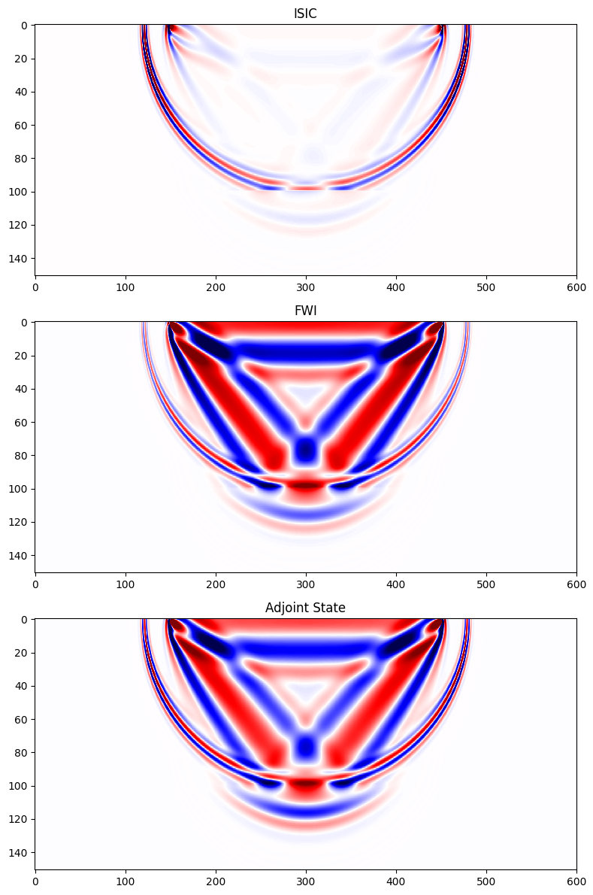

Imaging conditions in JUDI
title: Overview of JUDI imaging conditions for inversion author: Mathias Louboutin date: October 2022 –-
This example script is written using Weave.jl and can be converted to different format for documentation and usage This example is converted to a markdown file for the documentation.
Import JUDI, Linear algebra utilities and Plotting
using JUDI, LinearAlgebra, PythonPlotCreate a JUDI model structure
In JUDI, a Model structure contains the grid information (origin, spacing, number of gridpoints) and the physical parameters. The squared slowness is always required as the base physical parameter for propagation. In addition, JUDI supports additional physical representations. First we accept density that can either be a direct input Model(n, d, o, m, rho) or an optional keyword argument Model(n,d,o,m;rho=rho). Second, we also provide VTI/TTI kernels parametrized by the THomsen parameters that can be input as keyword arguments Model(n,d,o,m; rho=rho, epsilon=epsilon;delta=delta,theta=theta,phi=phi). Because the thomsen parameters are optional the propagator wil lonloy use the ones provided. For example Model(n,d,o,m; rho=rho, epsilon=epsilon;delta=delta) will infer a VTI propagation
Create discrete parameters
# Set up model structure
n = (601, 151) # (x,y,z) or (x,z)
d = (10f0, 10f0)
o = (0., 0.)
# Velocity [km/s]
v = ones(Float32,n) .+ 0.5f0
v0 = ones(Float32,n) .+ 0.51f0
v[:, 101:end] .= 2f0
v0[:, 101:end] .= 2f0
# Slowness squared [s^2/km^2]
m = (1f0 ./ v).^2
m0 = (1f0 ./ v0).^2
# Setup model structure
nsrc = 1 # number of sources
model = Model(n, d, o, m)
model0 = Model(n, d, o, m0)Model (n=(601, 151), d=(10.0f0, 10.0f0), o=(0.0f0, 0.0f0)) with parameters
(:m, :rho)Create acquisition geometry
In this simple usage example, we create a simple acquisiton by hand. In practice the acquisition geometry will be defined by the dataset beeing inverted. We show in a spearate tutorial how to use SegyIO.jl to handle SEGY seismic datasets in JUDI.
Create source and receivers positions at the surface
# Set up receiver geometry
xrec = [1 * (n[1] - 1) * d[1] / 4]
yrec = [0f0] # WE have to set the y coordiante to zero (or any number) for 2D modeling
zrec = [d[1]]
# receiver sampling and recording time
timeD = 2500f0 # receiver recording time [ms]
dtD = 4f0 # receiver sampling interval [ms]
# Set up receiver structure
recGeometry = Geometry(xrec, yrec, zrec; dt=dtD, t=timeD, nsrc=nsrc)GeometryIC{Float32} wiht 1 sourcesThe source geometry is a but different. Because we want to create a survey with nsrc shot records, we need to convert the vector of sources postions [s0, s1, ... sn] into an array of array [[s0], [s1], ...] so that JUDI understands that this is a set of indepednet nsrc
xsrc = 3 * (n[1] - 1) * d[1] / 4
ysrc = 0f0
zsrc = d[1]
# Set up source structure
srcGeometry = Geometry(xsrc, ysrc, zsrc; dt=dtD, t=timeD)GeometryIC{Float32} wiht 1 sourcesSource judiVector
Finally, with the geometry defined, we can create a source wavelet (a simple Ricker wavelet here) a our first judiVector In JUDI, a judiVector is the core structure that represent a acquisition-geometry based dataset. This structure encapsulate the physical locations (trace coordinates) and corrsponding data trace in a source-based structure. for a given judiVector d then d[1] will be the shot record for the first source, or in the case of the source term, the first source wavelet and its positon.
# setup wavelet
f0 = 0.015f0 # kHz
wavelet = ricker_wavelet(timeD, dtD, f0)
q = judiVector(srcGeometry, wavelet)judiVector{Float32, Matrix{Float32}} with 1 sourcesModeling
With our survey and subsurface model setup, we can now model and image seismic data. Linear Operators The core idea behind JUDI is to abstract seismic inverse problems in term of linear algebra. In its simplest form, seismic inversion can be formulated as
\[\underset{\mathbf{m}}{\text{argmin}} \ \ \phi(\mathbf{m}) = \frac{1}{2} ||\mathbf{P}_r \mathbf{F}(\mathbf{m}) \mathbf{P}_s^{\top} \mathbf{q} - \mathbf{d} ||_2^2 \\ \text{ } \\ \nabla_{\mathbf{m}} \phi(\mathbf{m}) = \mathbf{J}(\mathbf{m}, \mathbf{q})^{\top} (\mathbf{P}_r \mathbf{F}(\mathbf{m}) \mathbf{P}_s^{\top} \mathbf{q} - \mathbf{d})\]
where $\mathbf{P}_r$ is the receiver projection (measurment operator) and $\mathbf{P}_s^{\top}$ is the source injection operator (adjoint of measurment at the source location). Therefore, we bastracted these operation to be able to define these operators
# Setup operators
F = judiModeling(model, srcGeometry, recGeometry)
F0 = judiModeling(model0, srcGeometry, recGeometry)JUDI forward{Float32} propagator (src * rec * time) -> (src * rec * time)Model and image data
We first model synthetic data using our defined source and true model
# Nonlinear modeling
dobs = F*qjudiVector{Float32, Matrix{Float32}} with 1 sourcesInversion
Our main goal is to provide an inversion framework for seismic inversion. In this tutorial, we highlight the different imaging conditions available in JUDI. These imaging conditions are designed to enhanced properties in the gradient beneficial to the inversion problem such as the frequency content. Because these imaging conditions are intended tho be used in potential least-square problems, we also implemented (and test as part of our CI) their adjoint such that we can model linearized data with the JAcobian that correspond to the adjoint of the modified adjoint state crosscorelation imaging condition.
We compute now the FWI gradient with three different imaging conditions:
- "as" adjoint state imaging condition. This is the conventional cross-correlation adjoint state gradient.
- "isic" that computes the inverse scattering imaging condition designed to provide reflections for LSRTM (high frequency content)
- "FWI" that computes the complement of "isic" and brings up the low frequency content for velocity inversion
These can be specified in the Option structure via IC="as/isic/fwi
fas, g_as = fwi_objective(model0, q, 0*dobs; options=Options(IC="as", space_order=12))
fisic, g_isic = fwi_objective(model0, q, 0*dobs; options=Options(IC="isic", space_order=12))
ffwi, g_fwi = fwi_objective(model0, q, 0*dobs; options=Options(IC="fwi", space_order=12))(32.988995f0, PhysicalParameter{Float32, 2} of size (601, 151) with origin
(0.0f0, 0.0f0) and spacing (10.0f0, 10.0f0))We show below the sensitivity kernels for a single source-receiver pair highlighting the inversion properties of these imaging conditions
ni(x) = 10 * x ./ norm(x, Inf)
fig = figure(figsize=(8, 12))
subplot(311)
imshow(ni(g_isic'), cmap="seismic", aspect="auto", vmin=-1, vmax=1)
title("ISIC")
subplot(312)
imshow(ni(g_fwi'), cmap="seismic", aspect="auto", vmin=-1, vmax=1)
title("FWI")
subplot(313)
imshow(ni(g_as'), cmap="seismic", aspect="auto", vmin=-1, vmax=1)
title("Adjoint State")
tight_layout()
display(fig)